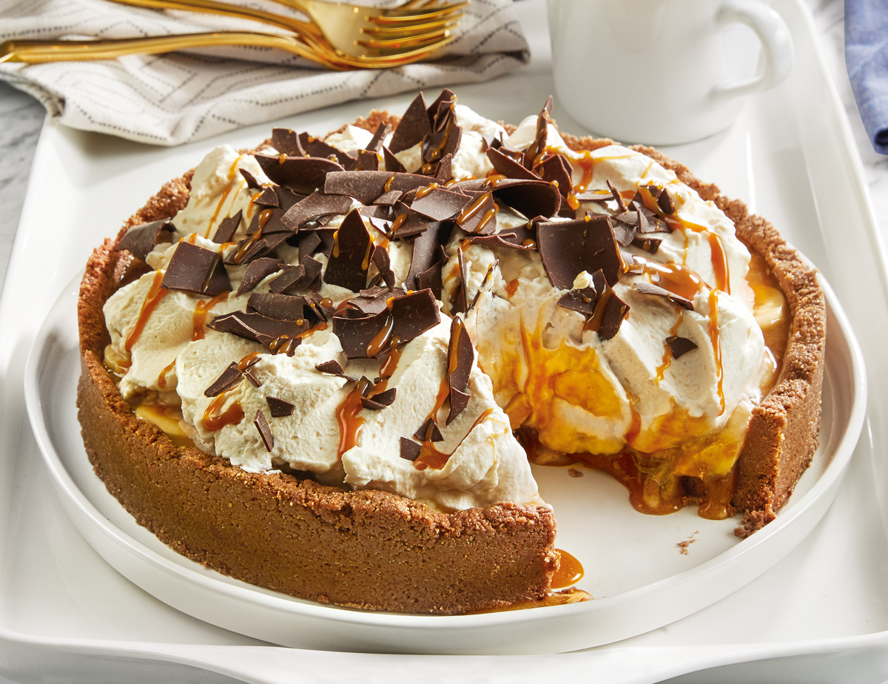

A torta de banana banoffee, conhecida por suas camadas irresistíveis de sabor, é uma sobremesa irresistível que encanta os paladares. O preparo da banoffee começa com uma base crocante de bolacha e manteiga, assada para dar textura. Em seguida, o leite condensado é cozido até caramelizar, formando uma cobertura aveludada e doce. Fatias generosas de banana são dispostas sobre essa camada. O creme de nata, batido com açúcar até atingir uma consistência firme, é a próxima adição, proporcionando suavidade ao paladar. Finalmente, a cobertura de chocolate em pó e um toque de canela são polvilhados, adicionando um contraste de sabores e aromas. Todo esse processo resulta em uma harmonia de texturas e sabores: crocância, doçura, frescor e um toque único de canela, combinados para criar uma experiência deliciosa e memorável para os amantes de sobremesas. Faça agora mesmo na sua casa essa deliciosa torta de banana banoffee!
